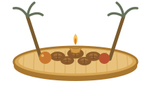

छठ पूजा की शुभकामनाएँ
Ek Chhoti Si Mithaas, Ek Badi Si Parampara.
Har bite mein ek kahaani, har parampara mein apnapan.

The Tradition · परंपरा
A Festival of Faith, Tradition and Togetherness.
Chhath is one of the oldest festivals of Bihar, Jharkhand and eastern Uttar Pradesh, and it travels wherever families from there make a home. A few days after Diwali, whole neighbourhoods head to rivers, ponds and ghats with bamboo baskets and a lot of love.
It is a thank-you note to Surya Dev, the sun who gives light and life to everything, and to Chhathi Maiya, the gentle mother who watches over children and families. There are no grand rituals here: just water, sunlight, simple offerings and people who show up for each other.
Devotees fast, stand in water at sunset and again at sunrise, and offer arghya to the sun. Behind every devotee there is a whole family cleaning, cooking, carrying and singing. That is the real heart of Chhath: togetherness.


-
01
Nahay Khay
A holy dip, a clean home and a simple, sattvik meal of rice and lauki to begin.
-
02
Kharna
A day of fasting, ended at dusk with sweet kheer and roti, shared with everyone.
-
03
Sandhya Arghya
Families gather at the ghat to offer thanks to the setting sun, with songs in the air.
-
04
Usha Arghya
Offerings to the rising sun at dawn. The fast is broken and the prasad is shared.
The Prasad · ठेकुआ
More Than Just a Sweet.
Thekua is a crisp, golden, lightly sweet treat, a little like a cookie that grew up in a village kitchen. In some places you will hear it called Khajuria. It is made from wheat flour, jaggery or sugar and ghee, and it is the star of the Chhath soop.
It has been part of Chhath for generations because it is simple, pure and keeps well for days. Families make it at home, with a clean kitchen and a lot of care, and it is offered to Surya Dev before anyone gets to taste it. That is what makes it prasad, not just a sweet.
The dough is kneaded stiff, shaped, pressed into a carved wooden mould for those pretty patterns, and fried slowly until it turns golden. The sweet smell tells you the festival has arrived.



Step by Step · बनाने की विधि
From Ingredients to Prasad.
Every step has its own story. Let’s see how it comes together.
Know your ingredients Tap to learn more
Pick an ingredient above to learn what it brings to a Thekua.
A Little Glimpse · झलक
Thekua, On Its Way.
From Our Family · हमारा संदेश